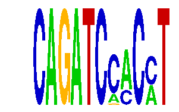

family_3 |
|---|
|  |
| Download PWM |
| Download instances (motifs) |
| Show motif distribution |
Query_ID | Query_Consensus | Subject_Name | Source_DB | Subject_ID | Length | Orientation | Offset | Divergence | Overlap | Subject_Consensus |
|---|
Sequence | Start_position (from start) | Start_position (from end) | Average conservation | Best conservation score | Instance_with_best_CS | Best_Z-score | Instance_with_best_ZS | Strand |
|---|---|---|---|---|---|---|---|---|
| chr15:27669300-27670863 | 212 | 223 | 0.0465455 | 0.07 | CAGATCSACMT | 17.971344 | CAGATCCMCMT | 1 |
| chr13:99948100-99949405 | 1030 | 1041 | 0.000818182 | 0.003 | CAGATCMACMT | 17.971344 | CAGATCCMCMT | 1 |
| chr5:91991500-91993677 | 483 | 494 | 0.000454545 | 0.002 | CAGATCCACMT | 16.697733 | CAGATCCMCST | 1 |
| chr12:118869943-118871400 | 1109 | 1120 | 0.0569091 | 0.085 | CAGATCCMCST | 16.697733 | CAGATCCACMT | -1 |
| chr1:54058300-54060326 | 755 | 766 | 0.00118182 | 0.003 | CAGATCCMCMT | 16.697733 | CAGATCSACMT | 1 |
| chr4:150668800-150673200 | 4332 | 4343 | 0.0912727 | 0.166 | CAGATCCMCCK | 15.77342 | CAGATCSMCCT | 1 |
| chr12:53900200-53902100 | 779 | 790 | 0.00718182 | 0.015 | CAGATCCACMT | 16.697733 | CAGATCCMCST | 1 |
| chrX:156240328-156242200 | 1471 | 1482 | 0.0890909 | 0.371 | CAGATCCMCCT | 16.697733 | CAGATCSACMT | 1 |
| chr4:57591900-57593700 | 1062 | 1073 | 0.000272727 | 0.003 | CAGATCMACMT | 17.971344 | CAGATCCMCMT | 1 |
| chr18:11387554-11389100 | 416 | 427 | 0.265727 | 0.293 | CAGATCMACMT | 16.626842 | CAGATCMACMT | 1 |
| chr8:64464300-64465500 | 17 | 28 | 0.0644545 | 0.093 | CAGATCMACMT | 16.626842 | CAGATCMACMT | -1 |
| chr12:109888551-109889600 | 970 | 981 | 0.00181818 | 0.003 | CAGATCMACMT | 17.971344 | CAGATCCMCMT | 1 |
| chr18:65475200-65477400 | 685 | 696 | 0.0259091 | 0.2 | CAGATCCMCST | 16.697733 | CAGATCCACMT | 1 |
| chr19:53782462-53783500 | 634 | 645 | 0.0609091 | 0.13 | CAGATCCMCMT | 17.971344 | CAGATCCMCMT | -1 |
| chr7:82549829-82551200 | 522 | 533 | 0.0101818 | 0.027 | CAGATCMACMT | 16.626842 | CAGATCMACMT | 1 |
| chr10:92903600-92906200 | 187 | 198 | 0.00227273 | 0.008 | CAGATCCMCST | 16.697733 | CAGATCCMCCK | -1 |
| chr12:83525300-83527400 | 1894 | 1905 | 0.0172727 | 0.052 | CAGATCSMCCT | 15.77342 | CAGATCSMCCT | 1 |
| chr9:25024165-25025165 | 799 | 810 | 0.00181818 | 0.007 | CAGATCMACMT | 16.626842 | CAGATCMACMT | 1 |
| chr9:29095200-29098000 | 111 | 122 | 0.00118182 | 0.004 | CAGATCSACMT | 17.971344 | CAGATCCMCMT | 1 |
| chr4:57767100-57768553 | 806 | 817 | 0.00109091 | 0.003 | CAGATCCMCMT | 16.697733 | CAGATCCMCCK | 1 |
| chr8:64392200-64393516 | 1091 | 1102 | 0.0170909 | 0.019 | CAGATCCMCST | 16.697733 | CAGATCCMCCK | 1 |
| chr5:151148297-151150000 | 126 | 137 | 0.996091 | 1 | CAGATCCMCCK | 16.697733 | CAGATCCMCCT | 1 |